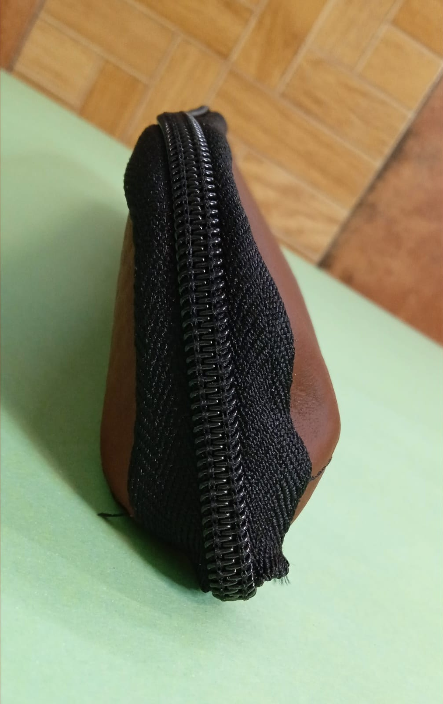
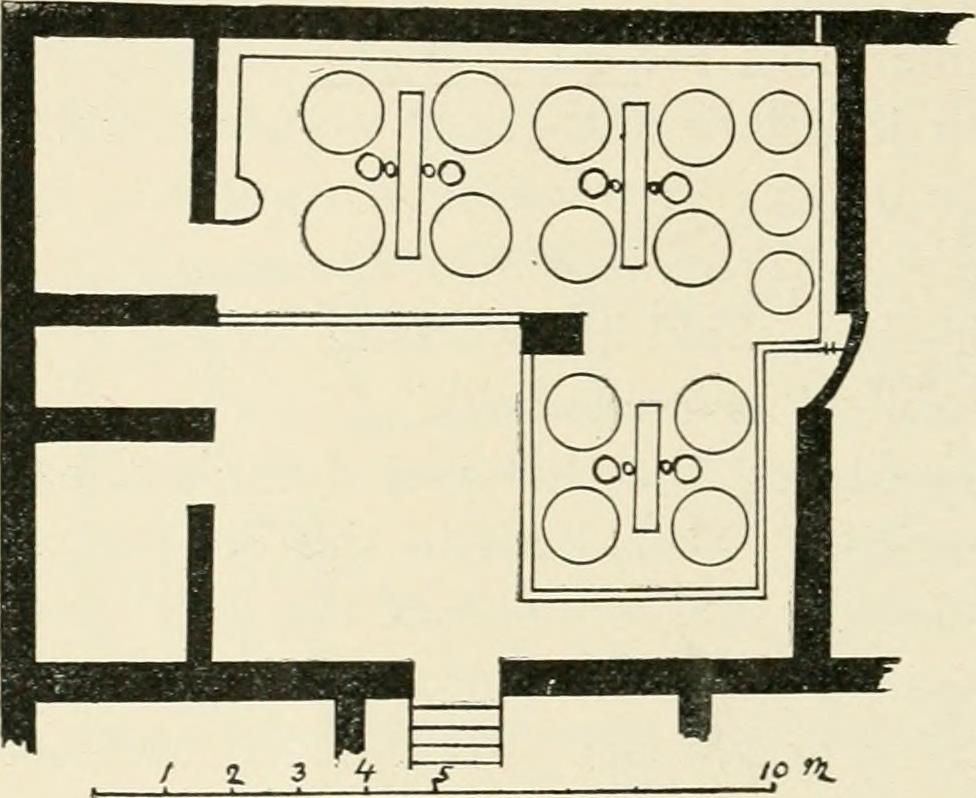

◈ TRAITÉS DE MAROQUINERIE
Leathercraft & Material Treatises
Technical monographs examining the collagen histology, joinery mechanics, and patination chemistry of genuine Shell Cordovan leather.

Treatise 01 • Histology
Collagen Micro-Architecture of Equine Shell
A histological examination of vertical collagen fibril orientation, poreless surface density, and zero-creasing flexural biomechanics.
Reading Time: 18 Min • 1,320 Words
Read Treatise →

Treatise 02 • Joinery Mechanics
Tensile Kinetics of Two-Needle Saddle Stitching
Stress distribution curves, awl perforation geometry, and friction locking in hand-sewn Fil Au Chinois cable linen seams.
Reading Time: 19 Min • 1,345 Words
Read Treatise →

Treatise 03 • Tannin Chemistry
Polyphenolic Cross-Linking in Six-Month Pit Tanning
Pyrogallol tannin diffusion gradients, thermal denaturation resistance, and hot-stuffing currying physics in subterranean vats.
Reading Time: 19 Min • 1,330 Words
Read Treatise →